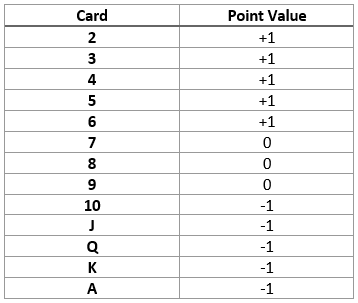
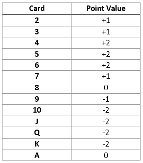
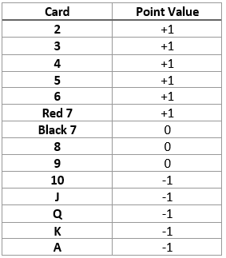
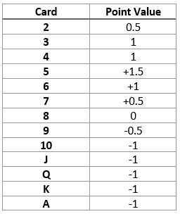

Card counting is used to track the amounts of high and low cards left in the deck that can be dealt to estimate the player’s advantage. The player is at an advantage when there are more high cards to be dealt so would do better to place a higher bet, then when there are more low cards the player is at a disadvantage and should place a lower bet. This is because when there are high cards in the deck the chance of the player getting a Blackjack increases, but also the chance of the dealer going bust. Then when there are more low cards the player is less likely to get a Blackjack and the dealer probably will not go bust.
There are many different systems of varying accuracy and complexity but will revolve around keeping a count of the high and low cards. Regardless of the method, card counting does improve the odds of the player against the dealer.
Counting cards involves assigning values to each card in the deck, then adding and subtracting accordingly from the ‘Running Count’. For each system there will be a pivot point. This is when the count reaches a point at which the deck is in favour of the player. In most systems this point would be at around +3, +4 or +5.
In this method, a point value is assigned to each card. It is the simplest of this kind, which makes it a level 1 system. This system is balanced, which means that if you were to count every card in a deck it would end up at 0.
The count should start at 0, and as each card is dealt add or subtract the point value assigned to it. So, if the first six cards dealt are 2, Q, 7, 9, 4, 10, 6, then the count would be +1 -1 +0 +0 +1 -1 +1 = +1. This is the Running Count. Divide the Running Count by the approximate number of decks remaining. For example, if the Running Count is +5 and there are 3 decks left to play, the True Count would be 5/3 = 1 1/3 which is roughly 1.
When the True Count is larger, you should bet more and vice versa. This is because a high count is showing that there are more high cards left in the decks, therefore a greater chance of a high scoring hand. And if the count is low you should bet less because it shows a larger proportion of low cards are left in the decks.
This system was developed by Bryce Carlson and he published it in his 2001 book called Blackjack for Blood. It is a level 2 system which means it is more complicated that High-Low. This system is balanced.
The counting structure for this system is more complex that others like High-Low because of the values assigned to the cards, this makes it more difficult for people to learn. The standard rules of card counting still apply for this system, start counting immediately when the cards are shuffled, counting each as they are dealt to the table. Also, that when the count is a high positive number like +4 and higher, the game is in favour of the player. Then when the count is lower like -1, 0 or +1 then the game is in favour of the dealer.
Red Seven is another level 1 system. This system is very similar to Hi-Lo, except that the red 7 has a value of +1 and the black 7 has a value of 0. Red Seven is an unbalanced system, if one whole deck was counted the end total would be +2.
What makes Red Seven stand out from other counting systems is that instead of starting the count from zero, the player would multiply the number of decks in play by -2 to find the starting point. For example, in a game using six decks the count would start at -12 (-2 multiplied by 6).
Wong Halves is a balanced level 3 card counting system, so it is quite complex. It was created by Stanford Wong (a pseudonym, his actual name is John Ferguson) and explained in his book Professional Blackjack. It is one of the most complicated methods of card counting.
The use of fractions/decimals is part of what makes Halves more complicated as well as more accurate in counting.